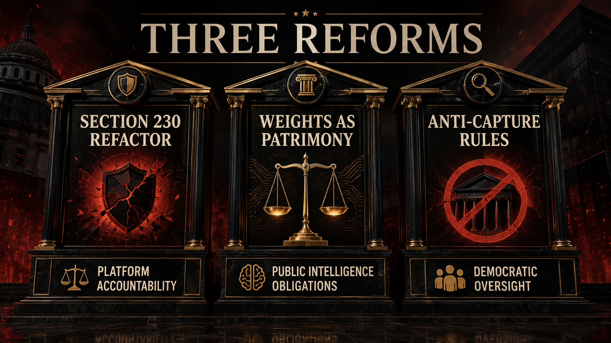

The response is no longer a mood. It is a program.

This book does not end with a self-care checklist and a request for nicer billionaires.
It does not end with “maybe unplug more.”
It does not end with “hopefully the market figures it out.”
And it definitely does not end with the exhausted fantasy that if users just become a little more disciplined, the architecture itself will somehow stop being extractive.
No.
The problem is structural.
So the answer has to become structural too.
If the feed became territory, if the archive became private capability, and if access to advanced intelligence is being consolidated through state-adjacent corporate power, then a serious response has to move at the level of law, ownership, and public obligation.
That is why this book closes with three reforms, not thirty vibes.
There is a reason the ending has to sound firmer than the opening. By this point the reader has already walked through the harvest, the social damage, the acceleration, the enclosure, the layoffs, the access hierarchy, and the legitimacy theater. If the book ended with “it’s complicated,” that would not be nuance. That would be surrender in expensive prose.
The first reform is to refactor Section 230 around reality rather than nostalgia.
The old legal imagination behind platform immunity was built for an era when the internet could still be pictured as a host environment rather than a behavioral command architecture. That imagination is obsolete. It does not describe what sovereign-scale platforms actually do.
These systems do not merely store speech. They rank it, amplify it, suppress it, route it, recommend it, monetize it, target it, and build predictive systems out of its aftermath. They shape what rises, what disappears, what becomes desirable, what becomes punishing, what is rewarded, and what is rendered socially invisible.
That is not neutral carriage.
That is governance by design.
If a system can tune visibility for billions, it is not a passive intermediary in any meaningful moral sense. It is infrastructure with editorial, psychological, and civic consequences at scale. A platform this powerful can no longer receive the same liability logic as if it were a dumb wall covered in stranger graffiti.
What should replace that fiction? Responsibility keyed to reach, amplification power, monetization structure, targeting architecture, moderation design, and systemic harm. Not perfection. Not impossible prior review of all human speech. But real duties proportional to power.
This is especially important for the generations this book is written to. Gen Z and millennials did not mainly encounter these systems as abstract policy entities. They encountered them as developmental environments. Systems that shaped beauty, status, sexual signaling, moral outrage, belonging, loneliness, and attention collapse. The law cannot keep acting as if all of that was random user behavior floating on top of neutral plumbing.
We are past that stage.
The platform is not just where harm happens.
The platform is often part of how harm is formatted, intensified, and monetized.
What this means in ordinary language is simple: if a company designs the weather, it cannot keep pretending it merely hosts the rain. Once a system ranks desire, outrage, beauty, panic, belonging, and humiliation at population scale, it becomes part of the causal machinery of the social world. That does not require impossible liability for every utterance. It requires ending the childish fiction that sovereign-scale behavioral infrastructures are just neutral bulletin boards with better branding.
The second reform is to treat frontier AI weights trained on humanity’s collective expression as a patrimony question, not merely a private-property question.
This is the intellectual heart of the whole project.
If the systems now being sold as frontier intelligence are built from human civilization in compressed form, then it is morally and politically absurd to treat them as if they were ordinary assets generated in a vacuum by whoever reached the compute cluster first. Not because current law has already settled the matter. It has not. But because the social reality already outruns the inherited categories.
A frontier weight is not a human mind.
It is not a literal copy of civilization.
It is not a soul in a server rack.
But it is also not detached from the public archive that made it possible.
That archive includes language, culture, art, code, expertise, memory, style, pedagogy, and labor created across societies, classes, and generations under wildly unequal conditions of consent and compensation. Once that collectively generated world becomes private machine power, the burden should shift. Firms should have to justify enclosure, not the public justify why it deserves a stake in what was built from its residue.
That is what patrimony means here. A framework in which frontier capability triggers public-trust reasoning, anti-monopoly limits, democratic oversight, transparency obligations, and a presumption against total private enclosure of intelligence built from collective life.
The end state argued for in this book is not naive chaos.
It is not “release everything and hope for the best.”
It is not pretending there are zero safety concerns.
It is something more demanding: move the center of gravity away from permanent private scarcity and toward broad public-interest availability, utility-like obligations, and governance structures that acknowledge the collective origin of the capability.
Put differently:
If humanity helped build the field, humanity should not be treated as a mere customer standing outside the fence.
And that is where this project parts ways with the timid version of reform. Too much public debate still treats the weights fight like a niche copyright argument for specialists. It is bigger than that. It is a civilizational ownership argument. Either intelligence built from collective human residue remains permanently enclosed by whoever captured the best legal and compute position first, or we admit that a capability generated from humanity at scale carries public-trust implications by default.
The third reform is to limit government capture by AI companies and, just as importantly, limit corporate capture of public intelligence infrastructure.
This one matters because private concentration gets even more dangerous once it fuses with public power under low-visibility conditions. If a small number of frontier firms sit inside procurement channels, defense pathways, national-security coordination, public funding streams, export-control privilege, or strategic state access, then their obligations should increase dramatically.
No more soft-focus language about partnership as if partnership itself were automatically virtuous.
No more pretending that public dependence on private intelligence vendors is just another procurement detail.
No more shrugging at revolving doors, lobbying intensity, opaque model-risk practices, or selective disclosure because everyone is too mesmerized by the product layer.
If public institutions are going to rely on frontier AI systems, then the public gets a right to more than glossy marketing and elite reassurance.
At minimum, that means:
This is not anti-state coordination. States will obviously interact with major AI systems. The point is not to ban contact. The point is to stop treating opaque entanglement as normal. A firm that receives public support, public privilege, or national-security intimacy while controlling a layer of future intelligence infrastructure should be judged less like a charismatic startup and more like a public-risk actor with heightened obligations.
That is the anti-capture doctrine in plain language:
the closer a private firm gets to public intelligence infrastructure, the less acceptable secrecy, unilateral enclosure, and unaccountable privilege become.
Everything else readers may want to do still matters. Digital hygiene matters. Cognitive recovery matters. Labor organization matters. Competition policy matters. Open public infrastructure matters. Youth education matters. Cultural criticism matters. Refusing total dependence matters.
But those are not alternatives to the three reforms.
They are what make the reforms livable.
They are implementation arms, not substitutes.
That distinction is important because a lot of public conversation gets trapped at the lifestyle layer. Should we use the tools less? Should parents monitor more? Should workers reskill? Should artists adapt? Sure, some of that has a place. But if the architecture of extraction, enclosure, and capture remains intact, lifestyle adaptation becomes unpaid maintenance of a system that keeps deepening the harm.

The point of ending with reforms is not to pretend politics is easy.
It is to refuse the fake maturity that says diagnosis without doctrine is enough.
It isn’t.
A generation needs more than critique.
It needs naming.
Then structure.
Then terms of refusal.
Then terms of reconstruction.
That is the real emotional promise this book is trying to keep with the reader. You are not crazy for feeling that something broke. You are not weak because the feed rewired you. You are not obsolete because a model can imitate pieces of your labor. You are not overreacting because the state-company relationship around frontier AI feels off. You are living inside a system that industrialized dependency and is now trying to rename the result as destiny.
Destiny is the word power uses when it wants obedience without debate.
This book rejects that word.
The future is not something these firms get to inherit by default because they were first to turn our residue into machine power.
The future is still a governance fight.
And if we are serious, it starts here:
Refactor Section 230.
Treat AI weights as a patrimony of humanity question.
Limit government capture by AI companies.
Everything else depends on whether those three moves become thinkable at scale.
This chapter adapts the documentary argument developed in the research paper Chapter 10: What To Do. The PDF version is here. That paper states the three-reform program directly and grounds it in the documented upstream record on platform design, training conflict, access control, and institutional capture.
The literary book ends here, but the work it argues for begins outside the page: in law, in labor, in public language, in technical governance, and in the refusal to keep calling extraction inevitable just because it learned how to speak back.
To our beloved:
Copyright Mark Uriostegui 2026